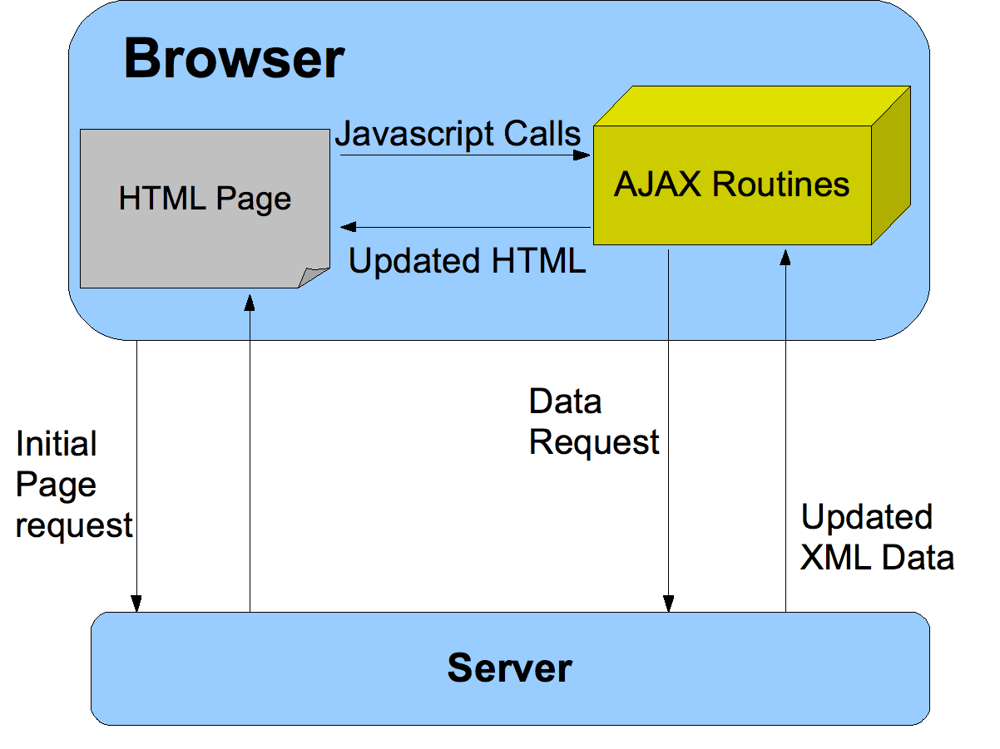

- POINT
-
- 자바스크립트는 타입 강제 라는 속성을 가진다.
-
- 타입강제는
데이터 타입을 변환해서라도 작업을 완료하려는 특성이다.
- 타입강제는
1. Ajax란?
전체 페이지를 새로 고치지 않고 페이지 일부만 로드하는 기법이다. 이를 이해하기 위해서는 먼저 브라우저의 데이터 처리 모델 방식에 대해 이해해야 한다.
1-1. 동기 처리 모델
- 브라우저는
- 따라서 서버로부터 데이터를 수집하고 로드하고 처리해 페이지의 모든 부분이 로드될 때까지 대기한다.
1-2. 비동기 처리 모델(넌 블로킹 처리 모델)
- Ajax를 이용해 브라우저가 서버에 데이터를 요청하고, 나머지 부분은 계속해서 로드해 사용자와 상호작용을 멈추지 않는 것이다.
- 페이지의 일부만 수정하고 싶을 때 특정 요소의 콘텐츠를 업데이트 한다.
-
이벤트를 가로채서 서버에 새로운 콘텐츠를 요청하는 방식이다.
- 데이터가 로드되는 동안 사용자는 계속해서 페이지를 사용할 수 있다. 그러다가 서버가 데이터를 전달해주면 Ajax 이벤트가 발생해서 다른 스크립트가 서버로부터 전달된 새로운 데이터를 읽고 페이지의 일부를 수정한다.
1-3. 비동기 처리 모델의 장점 : 더욱 빠른 사용자 경험
전체 페이지를 새로 고칠 필요가 없기 때문에 데이터가 빠르게 로드된다. 사용자는 기다릴 필요 없이 계속 웹 페이지를 사용할 수 있다.
2. Ajax 요청 및 응답 처리 과정
XMLHttpRequest 객체, open()메서드, send()메서드, onload()메서드
1) XMLHttpRequest 객체
var xhr = new XMLHttpRequest();
XMLHttpRequest 객체를 생성(객체 인스턴스)하고 변수에 저장한다.
2) open() 메서드
xhr.open('GET', 'data/test.json', true);
세 개의 매개변수(HTTP 메서드/요청 처리할 페이지의 URL/요청이 비동기로 처리될 것인지 지정하는 불리언 값)를 정의한다.
3) send() 메서드
xhr.send('search=arduino');
준비된 요청을 추가 정보와 함께 전달한다. 정보가 없으면 null 키워드를 사용할 수 있다.
4) onload() 메서드 - 응답
xhr.onload = function() {
if(xhr.status == 200) {
// 서버 실행 결과 처리 내용
}
}
브라우저가 서버로부터 응답을 받을 때 발생하는 이벤트. 이벤트가 발생하면 함수가 호출된다. 익명 함수는 xhr 객체의 status 속성 값을 검사해 서버의 응답이 정상인지 확인한다.
5) 예시 코드
// 1. XMLHttpRequest 객체 생성
var xhr = new XMLHttpRequest();
// 2. 응답 로드
xhr.onload = function() {
// 3. 서버 응답이 정상이면,
if(xhr.status === 200) {
// 4. 코드 실행(내용 수정하는 코드)
document.getElementById('content').innerHTML = xhr.responseText;
}
};
// 5. 요청 준비
xhr.open('GET', 'data/data.html', true);
// 6. 요청 전송
xhr.send(null);
XML을 처리할 때는 요청 준비/전송 부분 코드가 달라진다.
- XML 데이터는 페이지에 보여지기 위해 HTML로 변환되어야 한다.
var response = xhr.responseXML;
var events = response.getElementsByTagName('event');
3. Ajax 요청 응답 방식
HTML, XML, JSON로 표현된 데이터가 브라우저로 전달된다.
3-1. JSON : 자바스크립트 객체 표현식(Javascrpt Object Notation)
{
"nationality": "Korea",
"city": "seoul",
"language": "KO"
}
JSON 데이터 형식은
키 : 값형태로 나타나며, 키는 반드시 큰 따옴표로 둘러싸야 한다. JS 객체 -> JSON 객체 : JSON.stringfy() : 자바스크립트 객체를 JSON 형식의 문자열로 변환한다. JSON 객체 -> JS 객체 : JSON.parse() : JSON 데이터를 가진 문자열을 처리한다.
4.
정리 :
- 참고 : <자바스크립트 & 제이쿼리>, 존 두캣
- 더 알아보기